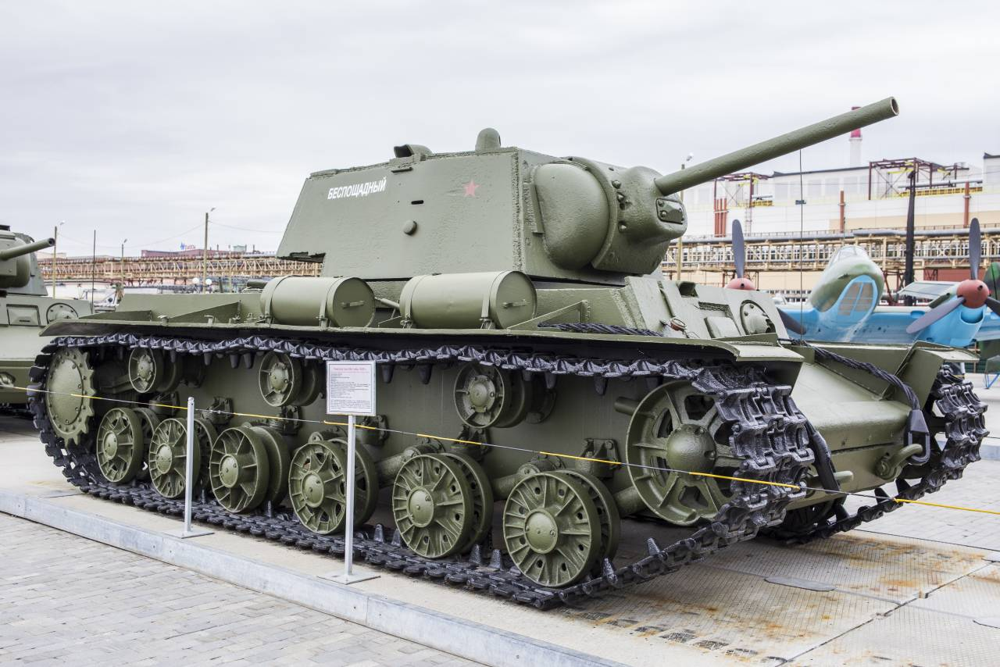
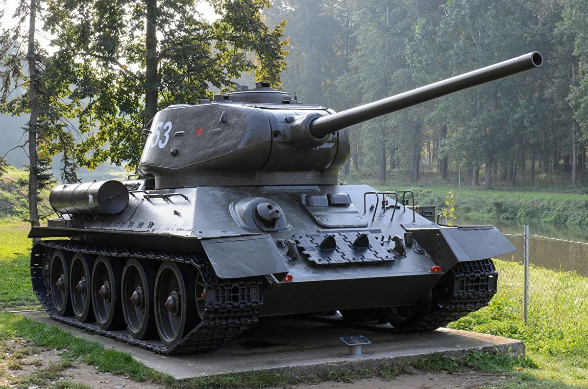

Добро пожаловать на сайт википедия танков
Тут вы сможите найти истории про разные танки
Ссылки на национальность танков
Советские танки
Mc-1

Советский лёгкий танк непосредственной поддер
жки пехоты 1920-х годов. Создан в 1925-1927 годах. Стал первым танком
советской разработки. Серийно производился
с 1928 по 1931 год, всего в нескольких вариантах было выпущено 959 танков
этого типа, не считая прототипа. В конце 1920-х - начале 1930-х годов
Т-18 составлял основу танкового парка РККА, но довольно быстро
был вытеснен более совершенным Т-26. Применялся в бою в конфликте
на КВЖД, но в 1938-1939 годах устаревшие и достигшие
крайней степени износа Т-18 были в основном сняты с вооружения или
использовались как неподвижные огневые точки. В незначительной
количестве использовались на начальном этапе Великой Отечественной войны.
Бт-7
Советский колёсно-гусеничный танк периода 1930-1940-х годов. Третий танк
семейства советских лёгких танков БТ. В отличие от своих предшественников БТ-2 и БТ-5,
имел сварной корпус несколько изменённой формы и новый двигатель. Вооружение
аналогично БТ-5. Выпускался, как и БТ-5, в варианте с радиостанцией и без
радиостанции. Всего произведено 5763 машины
Су-85Б

Советская противотанковая самоходная артиллерийская установка на шасси Т-70,
которой пытались заменить СУ-76.
А-20
А-20 — советский опытный лёгкий танк. Создавался в 1939 году как
улучшенная и более бронированная версия танка БТ-7. К 1940 году был
выпущен один опытный образец танка, но до производства дело не дошло,
так как от него отказались в пользу Т-34. 13 октября 1937 года АБТУ
выдало заводу № 183 техническое задание на проектирование новой
боевой машины — колёсно-гусеничного танка БТ-20:
Су-85
Средняя по массе советская САУ, относящаяся к классу
истребителей танков. СУ-85 активно и успешно использовались
с сентября 1943 года до окончания Великой Отечественной войны.
Т-34
T-34 («три́дцатьчетвёрка») — советский средний танк периода
Великой Отечественной войны, выпускался серийно с 1940 года,
и с 1944 года стал основным средним танком Красной Армии СССР.
Разработан в Харькове. Самый массовый средний танк Второй
мировой войны. С 1942 по 1945 гг. основное, крупносерийное
производство Т-34 было развёрнуто на мощных машиностроительных
заводах Урала и Сибири, и продолжалось в послевоенные годы.
Ведущим заводом по модифицированию Т-34 являлся Уральский
танковый завод № 183. Последняя модификация (Т-34-85)
состоит на вооружении некоторых стран и по сей день.
Благодаря своим боевым качествам Т-34 был признан рядом специалистов
лучшим средним танком Второй мировой войны и оказал громадное влияние
на дальнейшее развитие мирового танкостроения. При его создании советским
конструкторам удалось найти оптимальное соотношение между основными боевыми,
эксплуатационными и технологическими характеристиками.
Танк Т-34 является самым известным советским танком
Второй Мировой войны, а также одним из самых узнаваемых ее
символов. До настоящего времени сохранилось большое
количество этих танков различных модификаций в виде
памятников и музейных экспонатов.
КВ-1

Советский тяжёлый танк времён Великой Отечественной войны.
Обычно называется просто «КВ»: танк создавался под этим
именем, и лишь позже, после появления танка КВ-2, КВ первого образца
ретроспективно получил цифровой индекс. Выпускался с августа 1939 года по август 1942 года.
Су-100

Советская противотанковая самоходная артиллерийская установка периода Второй Мировой войны,
класса истребителей танков, средняя по массе. Была создана на базе среднего танка Т-34-85
конструкторским бюро Уралмашзавода в конце 1943 - начале 1944 года
как дальнейшее развитие САУ СУ-85 ввиду недостаточных возможностей последней
в борьбе с немецкими тяжёлыми танками. Серийный выпуск СУ-100 был начат
на Уралмашзаводе в августе 1944 года и продолжался до начала 1948 года.
Кроме того, в 1953-1956 годах её производство под обозначением SD-100 по
советской лицензии осуществлялось в Чехословакии. Всего там собрали 770 установок.
Всего же в СССР и Чехословакии было выпущено 4011 САУ этого типа.
Т-34-85

Войсковое обозначение последней модификации советского среднего
танка Т-34 с орудием калибра 85-мм. Принят на вооружение РККА Постановлением ГКО № 5021 от 23 января 1944 года.
КВ-1С
КВ-1С — советский тяжёлый танк периода Великой Отечественной войны.
Аббревиатура КВ означает «Клим Ворошилов» — официальное название
серийных советских тяжёлых танков выпуска 1942—1943 гг.
Индекс 1С означает «скороходную» модификацию первой серийной модели.
КВ-2
Советский тяжёлый штурмовой танк начального периода Великой Отечественной войны.
Аббревиатура КВ означает «Клим Ворошилов» - официальное название серийных
советских тяжёлых танков выпуска 1939-1943 гг.,
названных в честь героя Гражданской войны в России,
военного и политического деятеля Ворошилова Климента Ефремовича.
Первоначально именовался «КВ с большой башней».
Немецский танки
Pz.Kpfw. II
Pz.Kpfw. II (полное название — Panzerkampfwagen II, также известен как Sd.Kfz. 121 и Т-II) — немецкий
лёгкий танк времён Второй мировой войны.
Разработан в 1934 году. В различных модификациях производился до 1943 года.
В начале Второй мировой войны такие танки составляли 38 процентов танкового парка вермахта.
Первые модификации Pz.Kpfw. II в боях оказались слабее по вооружению и бронированию практически
всех танков аналогичного класса: польских 7TP, французских R35 и H35, чешских LT vz.38, советских Т-26 и БТ.
Начиная с 1938 года, модификации Pz.Kpfw. II Ausf. C существенно превосходили по бронированию лёгкие танки аналогичного класса:
польские 7TP, советские Т-26 и БТ. Лишь в 1942 году их вывели из состава танковых полков и частично использовали либо
в штурмовых артиллерийских бригадах, либо на второстепенных участках фронта. Шасси танка Pz.Kpfw. II было
выпущено в количестве более 3500 штук вместе с собственно танками.
PzKpfw 35(t)
Panzer Kampfwagen 35 (tschetisch) или PzKpfw 35(t) — немецкая модификация чехословацкого лёгкого танка LT vz.35.
Немцы на захваченных танках провели ряд изменений — уменьшили боекомплект до 72 снарядов и 1800 патронов, добавили
(помимо бронебойных и осколочно-фугасных) подкалиберные снаряды, заменили чехословацкую радиостанцию на немецкую.
После этого танк поступил на вооружение бронетанковых частей немецкой армии под обозначением PzKpfw 35(t), t — "tschechisch" — чешский.
112 танков вошли в состав 1-й лёгкой дивизии вермахта.
Pz.Kpfw. III
Panzerkampfwagen III — немецкий средний танк времён Второй мировой войны, серийно выпускавшийся с 1938 по 1943 год.
Сокращёнными названиями этого танка являлись Pz.Kpfw.III, Panzer III, Pz.III.
В ведомственном рубрикаторе военной техники нацистской Германии этот танк имел обозначение
Sd.Kfz. 141 (Sonderkraftfahrzeug 141 — машина специального назначения 141).
В советских исторических документах и популярной литературе Pz.Kpfw.III именовался как «Тип 3», Т-III или Т-3.
Эти боевые машины использовались вермахтом с первого дня Второй мировой войны.
Последние записи о боевом применении Pz.Kpfw.III в штатном составе подразделений вермахта датируются серединой 1944 года.
одиночные танки воевали вплоть до капитуляции Германии. С середины 1941 по начало 1943 года Pz.Kpfw.III был основой бронетанковых войск вермахта (панцерваффе) и,
несмотря на относительную слабость по сравнению с современными ему танками стран антигитлеровской коалиции,
внёс значительный вклад в успехи вермахта того периода. Танки этого типа поставлялись армиям стран-союзников Германии по Оси.
Захваченные Pz.Kpfw.III с хорошими результатами использовались Красной армией и союзниками.
На базе Pz.Kpfw.III в Германии и СССР создавались самоходно-артиллерийские установки (САУ) различного назначения.
Hetzer
Немецкая лёгкая самоходная артиллерийская установка класса истребителей танков.
Применялась в период Второй мировой войны.
По германской ведомственной системе обозначений военной техники носила индекс Sd.Kfz.138/2.
Была разработана чехословацкой фирмой BMM на шасси лёгкого танка PzKpfw 38 в ноябре 1943 - январе 1944 года
в качестве более дешёвой и массовой замены штурмовым орудиям StuG III, но в дальнейшем была
переклассифицирована в истребитель танков,
предназначавшийся в первую очередь для комплектования противотанковых подразделений пехотных и кавалерийских дивизий.
Pz.Kpfw. IV Ausf. D
История создания
По условиям Версальского мирного договора потерпевшей поражение в Первой мировой войне
Германии было запрещено иметь бронетанковые войска, за исключением незначительного количества
бронеавтомобилей для нужд полиции. Но несмотря на это, уже с 1925 года Управлением
вооружений рейхсвера в тайне велись работы по созданию танков.
До начала 1930-х годов эти разработки не заходили далее постройки прототипов,
как из-за недостаточных характеристик последних, так и из-за слабости промышленности Германии того периода.
Тем не менее, к середине 1933 года германским конструкторам удалось создать первый свой серийный танк — Pz.Kpfw.I
и в течение 1933—1934 годов начать его серийное производство. Pz.Kpfw.I, с его пулемётным вооружением и экипажем из двух человек, рассматривался лишь как переходная модель на пути к строительству более совершенных танков. Разработка двух из них началась ещё в 1933 году — более мощный «переходный» танк, будущий Pz.Kpfw.II и полноценный боевой танк, будущий Pz.Kpfw.III, вооружённый 37-мм пушкой, предназначенной в основном для борьбы с другой бронетехникой.
По причине изначальных ограничений вооружения Pz.Kpfw.III было решено в дополнение
к нему создать танк огневой поддержки с более дальнобойной пушкой с мощным осколочным снарядом,
способным поражать противотанковую оборону за пределами досягаемости других танков.
В январе 1934 года Управлением вооружений был организован конкурс проектов на создание машины такого класса,
чья масса не превышала бы 24 тонны. Поскольку работы по бронетехнике в Германии в тот период всё ещё велись в тайне,
новому проекту, как и остальным,
было присвоено кодовое именование «машина поддержки»(нем. Begleitwagen, обычно сокращаемый до B.W.; в ряде источников приводятся некорректные наименования
нем. Bataillonwagen и нем. Bataillonfuehrerwagen). С самого начала разработкой проектов на конкурс занялись фирмы «Рейнметалл» и «Крупп»,
позднее к ним присоединились «Даймлер-Бенц» и M.A.N. В течение последующих 18 месяцев свои разработки представили все фирмы,
а проект «Рейнметалл» под обозначением VK 2001(Rh) был в 1934—1935 годах даже изготовлен в металле в виде прототипа.